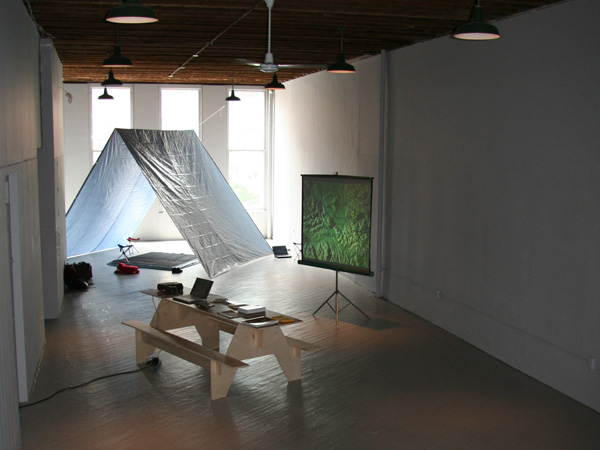
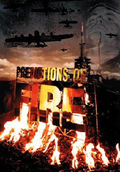

basekamp space > Events
East Art Map: IRWIN / NSK
Video screenings
IRWIN presentation
EAM project
EAM online
EAM Book
About IRWIN / NSK
Video screenings:
Weekly video compilation
Dates: 03-June-2006 through 31-July-2006; Open during summer hours
(Tuesdays, Thursdays, & Saturdays; 12.00 - 4.00 PM)
Location: Basekamp space
Description: Video compilation of selected artworks included in the "East Art Map" project, by IRWIN (a group of five artists who make up the visual-arts component of the Slovenian art collective NSK).

Weekly video screening list:
1. GROUP OHO
- MOUNT TRIGLAV, 1970
8 mm film of performance
OHO used a number of media (and their in-between forms), such as drawings, photographs, film, video (the first video works in Slovenia were produced in this context in the late 1960`s), music, texts, but also the way of dressing, living and behavior. In the second phase, the group established a dialogue with the contemporary artistic avant-garde: they used (and adapted) the principles of Arte Povera, Process Art, Land Art, Body Art and Conceptual Art. The third phase of OHO's work represented a combination of Concept Art and a kind of esoteric and ecological approach.
2. NESA PARIPOVIC
- N.P., 1977
8mm film, 22’06” (excerpt 10’32”)
N.P. is an 8mm film showing Nesa Paripovic walking and running through Belgrade's urban grid of streets and paths, following the unstructured route of an imagined trajectory. He takes an idiosyncratic walk that knows no barriers, crossing fences, climbing roofs, and jumping over balconies. As in his other works, which always deal with the issue of self-representation, the internal rhythms of the body are confronted with social and environmental structures. With this film Paripovic accomplished a significant return to the very origins of a tendency to locate conceptualist artistic acts within everyday behavior - a return to Situationist models of derivee.
3. ION GRIGORESCU
- BOX, 1978
8mm film, 2’45” (excerpt, 1minute)
Grigorescu's intellectual radicalism, expressed in lonely performances delivered for the camera, is quite unique due to the extreme cultural sophistication lying beneath his very crude images of (fake) self-mutilation and autistic sex. Although feeding from the same sources, his paintings and photographs put more emphasis on surprising cultural associations, radiating the atmosphere of old documentation for an anthropological study of some alien cultures. Combining a poverty of materials, technological improvisation, subliminal cynicism, religious humility and mythological free-associative thinking, Grigorescu has for more than three decades built a paradigmatic image of the human condition under political oppression. His discourse appeals to a wide audience due to a vocabulary developed on the border between pop and arte povera, with a touch of mysticism.
4. RASA TODOSIJEVIC
- WAS IST KUNST, MARINELA KOZELJ, 1978
video, 11’53“ (excerpt 4’45”)
The performance Was Ist Kunst, Marinela Kozelj? exposed a frontally seated female figure who became an object of "investigation" and abuse by the artist, who repeatedly shouted: Was ist Kunst?. A close-up of Kozelj’s face in the video document enhances the effects of intimidation and arrogance, and the very duration of this video makes the performance arduous for the viewer also, due to the traumatic "real-time" transmission of the event. Was Ist Kunst, Marinela Kozelj? is the key piece of Todosijevic's Was ist Kunst? performances in which he was the first to break with a certain sense of pathos encapsulating the New Art Practice in Yugoslavia. Ideological disillusionment was the fuel for the edgy and challenging works that brought him into the 1980's, a disillusionment reaching its peak in the early 1990's with Gott liebt die Serben series. The Was ist Kunst? series could be understood as an ideological pre-figuration of this series, but had more influence on the art projects of NSK in Slovenia then it had on the Belgrade art scene in the 80's.
5. IRWIN
- BLACK SQUARE ON RED SQUARE, 1992
documentary material, 3’21”
(in collaboration with Kinetikon Pictures)
The NSK Moscow Embassy marked the beginning of Irwin's journey in the direction of the epistemological heritage of Eastern Europe meeting Western Europe. In this intermediate period, when the East is still the East, and only begins to acquire its problematic Western form, the question of the inner spiritual art and cultural structure, which has lived in it unrecognized for over a century, is of major importance. This was a process of mirroring and reflecting itself and its own Eastern position, in which the recycling of different histories is not directed towards the West, but to a reflection of its own, internal position and its own possibilities for creation.
6. BÁLINT SZOMBATHY
- FLAGS II, 1993
video of performance, 3’58”
Szombathy carried out many projects that could be classified both as land art and analytical art with the aim of erasing the line between art and life by fully understanding the concept of dematerialization and the centrality of the artistic process. In his Lenin in Budapest project, he carried a placard with the image of Lenin through the streets of Budapest in 1972. This same image, which was carried during organized rallies celebrating the Socialist utopia in every corner of the Soviet bloc, appears as a ‚”legitimate” but exaggerating statement of enthusiastic identification with an ideology that can't be dealt with by the ideology itself.
7. EGLE RAKAUSKAITE
- A TRAP. EXPULSION FROM PARADISE, 1997
video of performance, 4’49”
Rakauskaite's live sculpture Trap: Expulsion From Paradise (1995) involving a dozen young girls dressed up in confirmands' dresses, their long hair braided into a tight net, opened the deepest subtle poetry of "virginity," its subjects shining with modesty and nobility, sometimes glistening with beauty and arrogance or pulsating with philosophical nuances. In her latest projects (mostly videos) the artist combines her previously established strategies with a deeper insight into the contemporary social environment.
8. ANRI SALA
INTERVISTA – FINDING THE WORDS, 1997
Sala belongs to a generation of young artists whose education took place after the political changes in Albania. From this ideological schizophrenia he has learned to push the language of documentary to its radical conclusions, working on the borders between reality and absurdity. Intervista - Finding the Words (1997), his first film, marked one of the most important moments for Albanian contemporary art. The work makes a new approach to short film, an exercise in interpretation and an effort to bridge the distance between the past and present, neutralizing the sense of objectivity traditionally associated with documentaries.
9. THE LJUBLJANA LACAN SCHOOL -
SLAVOJ ZIZEK
INTERVIEW WITH SLAVOJ ZIZEK, 1997
from film Retroavantgarde by M. Gr?inic & A. Šmid, (excerpt 2’41”)
The subcultural movement that arose in Ljubljana within the Student Cultural Center (known as ŠKUC). in the 1980's was a manifestation of an exceptional underground collision of art, culture and politics. The most significant strategy of the movement was not to find alternatives to the Communist system, but within it. In this way, the Ljubljana alternative movement clearly shows a deeper change in the actions of the underground movements of Europe, and more specifically, in Eastern Europe. Its theoretical framework was re-articulated by the Lacanian psychoanalytical discourse, most notably through the work of theoretician Slavoj Zizek
10. RASSIM
- CORRECTIONS,1996 – 1998
video documentation, extract 6’22”
The project Corrections involves the redesigning of Rassim's body into that of a body-builder over a period of one and a half year between 1997 and 1998. Rassim's unique contribution is based on the creation of an artistic persona and image that is both the artist and the work itself. The strategy of self-promotion of this work/persona in the public space takes the form of gestures that imitate the advertised modes of behavior in the mass media, or the representation of subculture. Taking personal risks, the artist is scanning society in a non-aggressive and non-engaging form while his critique of the new societal order after 1989 involves simulation of the clichés of consumerism that have fast become the new ideological dogma.
11. TANJA OSTOJIC
- PERSONAL SPACE, 1998
video of performance, 60’ (excerpt 5’24)
Ostojic's Personal Space is a very rare example (in contemporary Serbian art) of a work which has avoided the cynicism of the artists of her generation caught between their inability to alter the political events and their disavowal of any kind of torment inflicted upon them by these circumstances. In this performance Ostojic has critically evoked spiritual visions of the body from the medieval spiritual tradition and combined two aspects: nuditas naturalis and nuditas virtualis. This performance exposes the body simultaneously as a human condition of nakedness, either being a sign of vice or a sign of humility, and as a symbol of innocence and the raiment of the soul. Reduction to a virtual body of a woman/child/alien is a disturbing and poignant sign of the desire to be reborn, as pure, empty of thoughts and free to depart from material conditions.
12. JAAN TOOMIK
FATHER AND SON, 1998
Toomik developed his own, post-minimalist artistic code in the 1990's and since 1994 has mostly been using video as his main medium. Although not tied to any specific mythological or religious dogma, his work carries a strong mystical element. His video installations Way To Sao Paulo (1994), Dancing Home (1995), and Father And Son (1998) are driven by Toomik's despairing desire to give expression, through his bodily activities, to primeval conditions by repetitively using timeless symbols like water, fire, mirrors, and the sun.
13. COSMOCINETIK CABINET NOORDUNG
/ DRAGAN ZIVADINOV
- BIOMECHANICS NOORDUNG, 1999
project organized and coordinated by PROJECT ATOL FLIGHT OPERATIONS
extract 11’03”
On December 15, 1999, Dragan Zivadinov's Cosmokinetic Cabinet Noordung Theatre performed Biomechanics Noordung in a Russian IL-76MDK cosmonaut training aircraft, which was operated by the Yuri Gagarin Cosmonaut Training Center, based in Star City just outside Moscow, at an altitude of 6,660 meters. Biomechanics Noordung was staged in zero gravity, researching the revolutionary changes which take place in the human body in a situation of weightlessness. It analyzed contemporary theater and performance phenomena through - in relation to or in spite of - the plethora of new technological and electronic means which are now available.
14. MARINA GRZINIC & AINA SMID
- ON THE FLIES OF THE MARKET PLACE, 1999
video, 6’55”
Grzinic and Smid have been involved with video art since 1982, producing more than 30 video art projects, video and media installations, Internet sites, an interactive CD-Rom and a short film. In using documents and excerpts from books and magazines their video work On The Flies Of The Market Place (1999) raises the question of re-reading the European space. Using references to history, philosophy and the arts, the work elaborates on the idea of Eastern Europe as an indivisible reminder of all European atrocities.
15. VLADIMIR NIKOLIC
- RHYTHM, 2001
video installation, collection Muzej savremene umetnosti Belgrade. extract 10’36”
Five people are filmed standing on a stage while making the Christian-Orthodox sign of the cross, repetitively, following the techno-music beat. What is in fact striking in Nikolic's powerful video work Rythm from 2001 is that it brings its viewers back to one of the first ideological formulas, which was written in the 18th Century by Blaise Pascal: "Kneel down, move your lips in prayer, and you will believe". Ideology is in material practices, it resides in bodies and their rituals, and Nikolic renders these rituals redundant.
--
One-night screening: "Predictions of Fire"
Date: 08-July-2006 (This Saturday); 6.00 to 9.00 PM
Location: Basekamp space
Description: Special screening of "Predictions of Fire" (1996 documentary about the Slovenian art collective NSK). This screening accompanies the "East Art Map" project (see below) also at Basekamp throughout June and July 2006.
